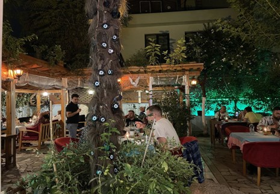

Istanbul est une belle ville avec plein de lieux touristique, plein de trucs à découvrire
voici une présentation de la ville d'ISTANBUL
LE MEILLEUR RESTAURANT D'ISTANBUL: Byzantion Bistro Restaurant
Pour plus d'information cliquer ici
avis des autres voyageurs à propos du restaurantAUTRES MEILLEUR RESTAURANT à ISTANBUL: Hidden Garden
 Pour plus d'informations cliquer iciVous pouvez aussi visiter d'autres trestaurant populaire visiter par d'autres touristes comme:
Read mores